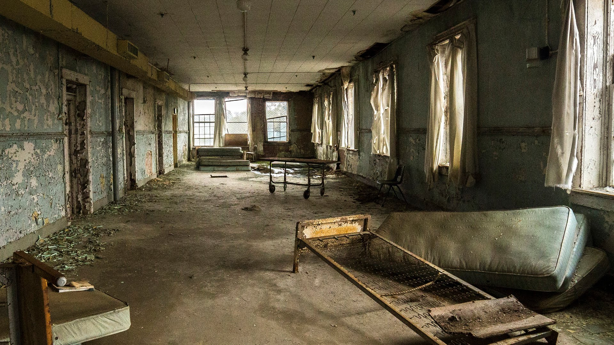

Past the double doors into the next room, the stale stench of destruction continues to permeate the room you enter until the stench is unbearable. More windows fill the room as you notice three doors on the left, all the same size and shape except for the graffiti on them which range from neural maps to a group of figures all linked together with stitches on their hands. This graffiti looks much more faded than the others. At the end of the three doors is another door that leads down to another hallway.
